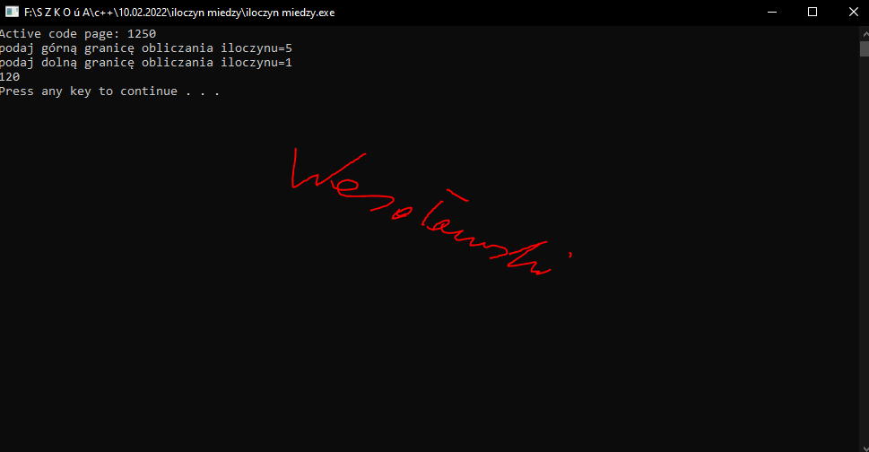

 #include <cstdlib> #include <iostream> using namespace std; int main(int argc, char *argv[]) { system("chcp 1250"); int gora_kow; int dol_kow; int liczba; cout<<"podaj górną granicę obliczania sumy="; cin>>gora_kow; cout<<"podaj dolną granicę obliczania sumy="; cin>>dol_kow; liczba=1; for (int i=dol_kow;i<=gora_kow;i++) { liczba=liczba*i; } cout<<liczba<<endl; system("PAUSE"); return EXIT_SUCCESS; }